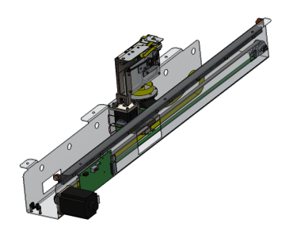
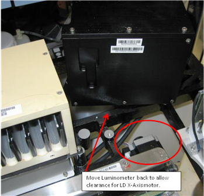
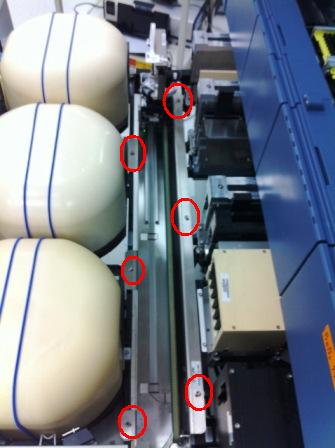
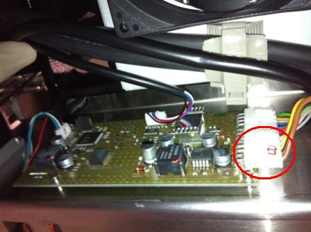
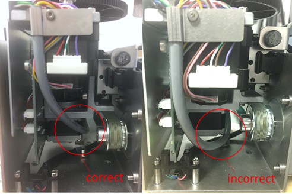
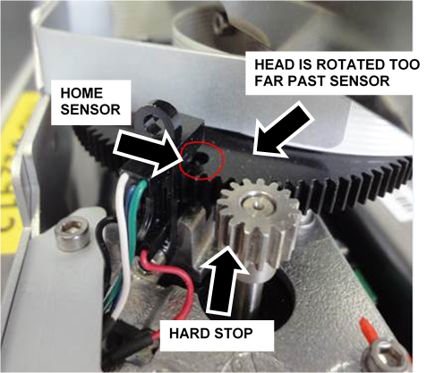

Parts and Materials Required
- Proper PPE
- Allen wrench, 4 mm
- 30 cm ruler
 DISTRIBUTOR, MODULE
DISTRIBUTOR, MODULE

Time Required
- 1 hour
Removal Procedure
|
|
WARNING—MTU |
- Put on proper PPE.
- Start Service Software.
- Click Initialize System.
- Click Clear MTU.
- Close Service Software and power down the Panther System.
- Remove the Luminometer Injector.
- Carefully open the Service Drawer.
- Unscrew the Luminometer from the Service Drawer, and move it aside to allow clearance for the Distributor X-drive motor when the Distributor is removed.

- Using a 4 mm Allen wrench, unscrew the 6 bolts that secure the Distributor to the Service Drawer.

- Disconnect the cable connecting the Distributor to the COP.

- Lift the Distributor up and out of the Service Drawer. Do NOT touch the Incubator Door tabs.

Caution — The Distributor weighs 19.4 lbs (8.8 kg). Use proper lifting techniques. 
Note—If returning the module, decontaminate the module and complete the COD/OBF/RMA Form [19-02-APX-A].
Replacement Procedure
If installing the newer style distributor, see section Distributor Model Information, verify the gray Theta Motor cable is routed to the side of the Z-axis motor. If the cable is routed underneath the motor it may snag as the distributor head moves upward. If necessary, loosen the appropriate cable ties and adjust the cable to allow free movement when the distributor head is moving in the Z direction.

|
|
Caution—Take care when lowering the new distributor into the service drawer! The incubator door tabs are fragile and can be broken easily. The new Distributor [ASY-10492] should have notches cut out of the lip to clear the incubator door tabs. If the new Distributor does not have these notches (or they are in a different location), you may have to move the incubators back an inch to install the new Distributor. |
Do not manually rotate the distributor head past the theta home sensor!
During installation or servicing of the distributor, It is possible to manually rotate the distributor head just beyond the theta home sensor (light barrier), as indicated in the picture below. If the distributor is initialized in this position, a stall of theta movement will cause initialization failure.
To correct, rotate the distributor head slightly clockwise (away from the hard stop) so the hole (outlined in the picture below) is under the home sensor and initialize again.
|
|
Note—This should not occur during normal operation of the system. |

Important Notes
- Before teaching, clean all teach points with alcohol and a wipe.
- Watch the Linear Distributor while it is teaching and verify that easy contact is made with all teach points.
- Watch the Linear Distributor during the OQ and address any rough insertion/removal of MTUs.
- Install incubator door clips if required.
- Do not perform Hook Alignment Procedure on the new Distributor.
- Do not perform Linear Distributor Theta PCB Insulation and Connector Treatment
Procedure
- Place the new Distributor into the Service Drawer.
- Secure the module with the 6 bolts removed with the previous Distributor.
- Plug the cable from the COP into the new Distributor.
- Place the Luminometer back into its correct location and properly secure it to the Service Drawer.
- Close the Service Drawer.
- Reinstall the Luminometer Injector.
- Install Panther System firmware to the module.
- Start up Service Software.
 button at the top of the page to send feedback, comments, or change requests.
button at the top of the page to send feedback, comments, or change requests.